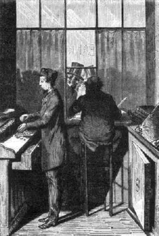
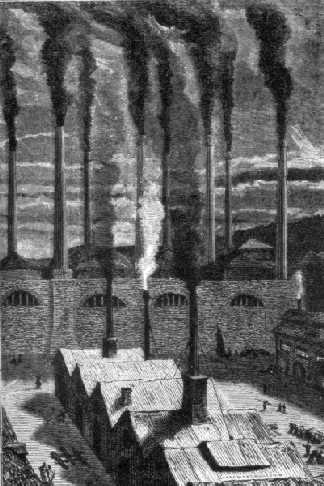

Capítol XII
"URBI ET ORBI"
Un cop resoltes les dificultats
astronòmiques, mecàniques i topogràfiques, vingué
la qüestió del diner. Es tractava de procurar-se una enorme suma
per a l'execució del projecte. Cap particular ni àdhuc cap Estat
no hauria pogut disposar dels milions necessaris.
El president Barbicane prengué l'acord, per més que l'empresa
fos americana, de donar-hi un caire d'interès universal, demanant a cada
poble la cooperació financera. Era, ensems, el dret i el deure de tota
la terra d'intervenir en les coses del seu satèl·lit. La subscripció
oberta amb aquesta finalitat s'estengué de Baltimore al món enter,
"urbi et orbi".
Aquesta subscripció havia de reeixir més enllà de tota
esperança. Es tractava de sumes a donar i no en concepte de préstec.
L'operació era purament desinteressada en el sentit literal del mot,
i sense cap probabilitat de benefici.
Però l'efecte de la comunicació de Barbicane no s'havia aturat
a les fronteres dels Estats Units, sinó que havia franquejat l'Atlàntic
i el Pacífic i envaït alhora l'Àsia i l'Europa, l'Àfrica
i l'Oceania. Els observatoris de la Unió es posaren en contacte immediat
amb els observatoris dels països estrangers. Els uns, els de París,
Petersburg, Cap de Bona Esperança, Berlín, Altona, Estocolm, Varsòvia,
Hamburg, Buda, Bolònia, Malta, Lisboa, Benarès, Madràs
i Pekín, transmeteren llurs compliments al Gun-Club. Els altres observatoris
mantingueren una actitud de prudent expectativa.

Es van obrit les subscripcions
Pel que pertoca a l'observatori de Greenwich, i amb l'aquiescència dels
vint-i-dos altres establiments astronòmics de la Gran Bretanya, fou neta
la seva actitud. Ardidament negà la possibilitat de l'èxit i estigué
d'acord amb les teories del capità Nicholl. Així mentre distintes
associacions científiques prometien enviar delegats a Tampa-Town, la
junta de l'observatori de Greenwich, reunida en sessió, passà
barroerament a l'ordre del dia sobre la proposició de Barbicane. Era
una bella i bona demostració de la gelosia anglesa. I això fou
tot.
En resum, l'efecte fou excel·lent en el món científic,
i d'allí va passar a les masses, que, en general, s'apassionaren per
l'afer. Era un fet d'alta importància, puix que el públic anava
a ésser cridat perquè subscrivís un capital considerable.
El president Barbicane, el 8 d'octubre, havia donat curs a un entusiàstic
manifest en el qual feia una crida "a tots els homes de bona voluntat damunt
la Terra". Aquest document, traduït a totes les llengües, tingué
un èxit grandiós.
Les subscripcions foren obertes en les principals ciutats de la Unió
per centralitzar-se a la banca de Baltimore, a 9, Baltimore Street. Més
tard s'obriren subscripcions en els diferents Estats dels dos continents:
A Viena, S. M. de Rothschild.
A Petersburg, Stieglitz i Cª.
A París, el Crèdit Mobiliari.
A Estocolm, Tottie & Arfuredson.
A Londres, N.-M. de Rothschild i Fills.
A Torí, Ardouin i Cª.
A Berlín, Casa Mendelsohn.
A Ginebra, Lombard, Odier i Cª.
A Constantinobla, Banca Otomana.
A Brussel·les, S. Lambert.
A Madrid, Daniel Weisweller.
A Amsterdam, el Crèdit Neerlandès.
A Roma, Torlonia i Cª.
A Lisboa, Casa Lecesne.
A Copenhague, la Banca privada.
A Buenos Aires, la Banca Maua.
A Rio de Janeiro, la mateixa casa.
A Montevideo, la mateixa casa.
A Valparaíso, Tomàs La Chambre i Cª.
A Mèxic, Martí Daran i Cª.
A Lima, Tomàs La Chambre i Cª.
Tres dies després
d'haver donat curs al manifest del president Barbicane, quatre milions de dòlars1
eren abocats entre les diferents ciutats de la Unió. Amb un compte semblant,
el Gun-Club ja podia començar.
Alguns dies més tard, els despatxos telegràfics assabentaven Amèrica
que les subscripcions estrangeres es cobrien amb una vertadera rapidesa. Certs
països es distingien per llur generositat; altres, en canvi, afluixaven
amb menys facilitat. Era cosa de temperament.
D'altra banda, les xifres són més eloqüents que les paraules,
i heus aquí l'estat oficial de les sumes que foren portades a l'actiu
del Gun-Club, un cop restà closa la subscripció.
Rússia abocà pel seu contingent l'enorme suma de tres-cents seixanta-vuit
mil set-cents trenta-tres rubles. Per a restar-ne astorat caldria desconèixer
el gust científic dels russos i l'interès creixent que ells demostren
pels estudis astronòmics, mercès a llurs nombrosos observatoris,
el més important dels quals va costar dos milions de rubles en el seu
temps.
França començà per riure's de la pretensió dels
americans. La lluna va servir de pretext a mil jocs de paraules facecioses i
a una vintena de sainets, en els quals el mal gust i la ignorància anaven
de bracet. Però, de la mateixa manera que els francesos, en altre temps,
pagaren després d'haver cantat, aquesta vegada pagaren després
d'haver rigut, i se subscriviren per la suma d'un milió dos-cents cinquanta-tres
mil nou-cents trenta francs. A aquest preu bé tenien el dret de divertir-se
un xic.
Àustria es mostrà prou generosa enmig dels seus tràfecs
financers. La seva aportació dins de la contribució pública
pujà a un total de dos-cents setze mil florins, que foren ben rebuts.
Cinquanta-dos mil rixdals fou l'aportació de Suècia i de Noruega.
La xifra era relativament considerable donat el país, però hauria
estat bon tros més elevada si la subscripció hagués tingut
lloc a Cristiania al mateix temps que a Estocolm. Per una raó o altra,
als noruecs no els plau de remetre llur diner a Suècia2.
Prússia, amb una tramesa de dos-cents cinquanta mil tàlers, testimoniejà
la seva alta aprovació per l'empresa. Els seus diferents observatoris
s'afanyaren a contribuir-hi per una suma important, i foren els més apassionats
a encoratjar el president Barbicane.
Turquia es conduí generosament, car ella estava personalment interessada
en l'afer. La Lluna, en efecte, regula el curs dels seus anys i el seu dejuni
del Ramadà. No podia fer menys que donar un milió tres-centes
setanta-dues mil sis-centes quaranta piastres, i les donà amb un entusiasme
que revelava, malgrat tot, una certa pressió per part del Govern de la
Porta.
Bèlgica va distingir-se entre tots els Estats de segon ordre per un donatiu
de cinc-cents tretze mil francs, prop de dotze cèntims per habitant.
Holanda i les seves colònies s'interessaren per l'operació amb
cent deu mil florins, pregant solament que se'ls fes una bonificació
del cinc per cent, ja que pagaven al comptat.
Dinamarca, malgrat el seu reduït territori, donà així i tot
nou mil ducats fins, la qual cosa prova l'amor dels danesos per les expedicions
científiques.
La Confederació germànica va contribuir-hi amb trenta-quatre mil
dos-cents vuitanta-cinc florins. No es podia demanar més. Ultra això,
tampoc no hauria donat més.
Encara que molt empobrida, Itàlia trobà dues-centes mil lires
d'entre les butxaques dels seus fills, però després d'haver-les
deixades ben escurades. Si hagués tingut Venècia hauria fet més;
però, en fi, com que no tenia Venècia...3.
Els Estats de l'Església es cregueren en el deure d'enviar no menys de
set mil quaranta escuts romans, i Portugal dugué el seu amor a la ciència
fins a enviar trenta mil escuts.
Mèxic fou el dineret de la vídua. Vuitanta sis mil pesos forts,
però els imperis que es funden van sempre molt curts de diner.
Dos-cents cinquanta-set francs fou la modesta aportació de Suïssa
a l'obra americana. Val a dir-ho francament, Suïssa no hi veia el costat
pràctic de l'operació; no li semblava pas necessari que el fet
d'enviar una bala de canó a la Lluna fos de tal naturalesa perquè
s'establissin relacions de negocis amb l'astre de les nits, i li semblava poc
prudent de comprometre els seus capitals en una empresa tan aleatòria.
Després de tot, potser tenia raó Suïssa.
Pel que es refereix a Espanya, fou impossible de reunir més de cent deu
rals4. Espanya donà com a excusa que havia d'acabar
els seus camins de ferro. La veritat sigui dita, la ciència no és
gaire benvista en aquell país. Es troba bastant endarrerida. A més,
alguns espanyols, i no dels menys instruïts, no s'adonaven ben bé
de la massa del projectil comparada amb la de la Lluna, i temien que no fos
causa per a alterar la seva òrbita, pertorbant-la en la seva funció
de satèl·lit i provocant la seva caiguda a la superfície
del globus terrestre. En aquest cas, més valia abstenir-se'n, i això
és el que féu... llevat d'uns pocs rals.
Restava Anglaterra. Ja era sabuda la menyspreadora antipatia amb què
acollí la proposició de Barbicane. Els anglesos no tenen més
que una sola ànima per als vint-i-cinc milions d'habitants que conté
la Gran Bretanya5. Donaren a comprendre que l'empresa del
Gun-Club era contrària "al principi de no intervenció"
i no se subscriviren ni per un farthing6.
En saber aquesta notícia, el Gun-Club s'acontentà d'arronsar les
espatlles i retornà al seu gran afer. Quant a l'Amèrica del Sud,
és a dir, Perú, Xile, Brasil, les províncies del Plata
i Colòmbia, trameteren als Estats Units la suma de tres-cents mil dòlars.
El Gun-Club va trobar-se al capdamunt d'un capital considerable, del qual heus
aquí la descomposició:
Subscripció dels
Estats Units. 4.000.000 dòlars
Subscripció estrangeres......... 1.446.657 "
Total.................. 5.446.675 dòlars7.
Eren, doncs, cinc milions
quatre-cents quaranta-sis mil sis-cents setanta-cinc dòlars, el que el
públic abocà a la caixa del Gun-Club.
Ningú no ha de sorprendre's de la importància de la xifra aconseguida.
Els treballs de foneria, el foradament, el dels paletes, el transport dels obrers,
llur instal·lació en un país gairebé inhabitat,
la construcció de forns i bastiments, la ferramenta, la pólvora,
el projectil i els imprevistos havien, segons els pressupostos, d'absorbir-ho
gairebé del tot. Algunes canonades de la guerra federal havien costat
mil dòlars; aquesta del president Barbicane, única en els fastos
de l'artilleria, bé podia valer cinc mil vegades més.
El 20 d'octubre, un contracte fou establert amb la fàbrica de Goldspring,
prop de Nova-York, que durant la guerra havia fornit a Parrott els seus millors
canons de fosa.

La fàbrica de Goldspring, prop de Nova York
Fou estipulat, entre les parts contractants, que la fàbrica de Goldspring
es comprometia a transportar a Tampa-Town, a la Florida meridional, el material
necessari per a la fosa del Columbiad. Aquesta operació havia de restar
acabada, a tot estirar, el 15 d'octubre de l'any vinent, i el canó lliurat
en bon estat, sota pena d'una indemnització de cent dòlars per
dia fins al moment en què la Lluna es presentaria en idèntiques
condicions, o sia al cap de divuit anys i onze dies. La contracta d'obrers,
llurs salaris i les distribucions necessàries anaven a càrrec
de la companyia del Goldspring.
Aquest contracte, fet per duplicat i en bona fe, fou firmat entre I. Barbicane,
president del Gun-Club, i J. Murchison, director de la fàbrica de Goldspring,
els quals aprovaren l'escriptura.
1. Tenint en compte el mateix canvi esmentat més
amunt, aquesta quantitat pujaria avui dia a Frs. fr. 1.972.000.000,-. (N. del
T.)
2. La separació d'aquests dos països tingué
lloc el 1905. (N. del T.)
3. Venècia va entrar a formar part del regne d'Itàlia
el 1866. (N. del T.)
4. Trenta-set pessetes amb cinquanta cèntims (N.
del T.)
5. Actualment té més de 50.630.000 habitants.
(N. del T.)
6. Quart de penic, o sia dos cèntims.
7. 29.520.983,40 francs en temps de Juli Verne. Al canvi
oficial d'avui, ja indicat més amunt, aquest import representaria Frs.
fr. 2.685.210.775,-